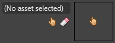
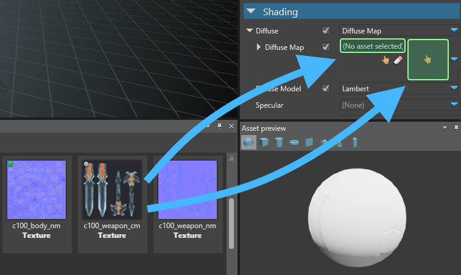
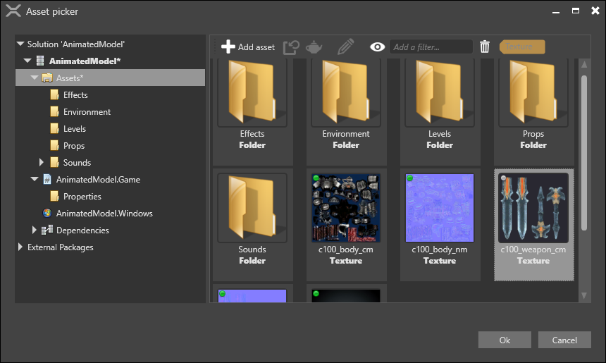
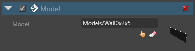
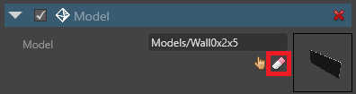
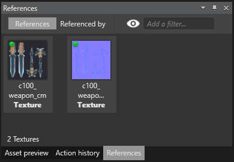

Use assets
Warning
Приносим свои извинения за неудобства. Для этой страницы нет перевода на русский язык. Она будет отображаться на английском языке.
Beginner
There are four ways to use assets:
- reference them in entity components
- reference them in other assets
- load them from code as content
- load them from code as content using
UrlReference
Reference assets in components
Many kinds of component use assets. For example, model components use model assets.
Components that use assets have asset docks in the property grid.

To add an asset to an entity component, drag the asset to the asset dock in the component properties (in the property grid). You can drop assets in the text field or the empty thumbnail.

Alternatively, click  (Select an asset).
(Select an asset).

The Select an asset window opens.
Note
The Select an asset window only displays assets of types expected by the component. For example, if the component is an audio listener, the window only displays audio assets.
After you add an asset to a component, the asset dock displays its name and a thumbnail image.

Reference assets in other assets
Assets can reference other assets. For example, a model asset might use material assets.
You can add asset references to assets the same way you add them to entity components (see above).
Clear a reference
To clear a reference to an asset, in the asset dock, click  (Clear reference).
(Clear reference).

Examine references
You can see the references in a selected asset in the References tab. By default, this is in the bottom right of Game Studio.

- The References tab displays the assets referenced by the selected asset.
- The Referenced by tab displays the assets that reference the selected asset.
Tip
If you can't see the References tab, make sure it's displayed under View > References.
Load assets from code
When loading in assets at runtime we speak of "Content" rather than assets. The loaded content refers to the asset and can then be used in your script.
// Load a model (replace URL with valid URL)
var model = Content.Load<Model>("AssetFolder/MyModel");
// Create a new entity to add to the scene
Entity entity = new Entity(position, "Entity Added by Script") { new ModelComponent { Model = model } };
// Add a new entity to the scene
SceneSystem.SceneInstance.RootScene.Entities.Add(entity);
Tip
To find the asset URL, in Game Studio, move the mouse over the asset. Game Studio displays the asset URL in a tooltip. URLs typically have the format AssetFolder/AssetName.
Warning
When loading assets from scripts, make sure you:
- include the asset in the build as described in Manage assets
- make sure you add the script as a component to an entity in the scene
Unload unneeded assets
When loading content from code, you should unload content when you don't need them any more. If you don't, content stays in memory, wasting GPU.
To unload an asset, use Content.Unload(myAsset).
Load assets from code using UrlReference
UrlReference allows you to reference assets in your scripts the same way you would with normal assets but they are loaded dynamically in code. Referencing an asset with a UrlReference causes the asset to be included in the build.
You can reference assets in your scripts using properties/fields of type UrlReference or UrlReference<T>:
UrlReferencecan be used to reference any asset. This is most useful for the "Raw asset".UrlReference<T>can be used to specify the desired type. i.e.UrlReference<Scene>. This gives Game Studio a hint about what type of asset thisUrlReferencecan be used for.
Examples
Loading a Scene
Using UrlReference<Scene> to load the next scene.
using System.Threading.Tasks;
//Include the Stride.Core.Serialization namespace to use UrlReference
using Stride.Core.Serialization;
using Stride.Engine;
namespace Examples
{
public class UrlReferenceExample : AsyncScript
{
public UrlReference<Scene> NextSceneUrl { get; set; }
public override async Task Execute()
{
//...
}
private async Task LoadNextScene()
{
//Dynamically load next scene asynchronously
var nextScene = await Content.LoadAsync(NextSceneUrl);
SceneSystem.SceneInstance.RootScene = nextScene;
}
}
}
Load data from a Raw asset JSON file
Use a Raw asset to store data in a JSON file and load using Newtonsoft.Json. To use Newtonsoft.Json you also need to add the Newtonsoft.Json NuGet package to the project.
//Include the Newtonsoft.Json namespace.
using Newtonsoft.Json;
using System.IO;
using System.Threading.Tasks;
//Include the Stride.Core.Serialization namespace to use UrlReference
using Stride.Core.Serialization;
using Stride.Engine;
namespace Examples
{
public class UrlReferenceExample : AsyncScript
{
public UrlReference RawAssetUrl { get; set; }
public override async Task Execute()
{
//...
}
private async Task<MyDataClass> LoadMyData()
{
//Open a StreamReader to read the content
using (var stream = Content.OpenAsStream(RawAssetUrl))
using (var streamReader = new StreamReader(stream))
{
//read the raw asset content
string json = await streamReader.ReadToEndAsync();
//Deserialize the JSON to your custom MyDataClass Type.
return JsonConvert.DeserializeObject<MyDataClass>(json);
}
}
}
}